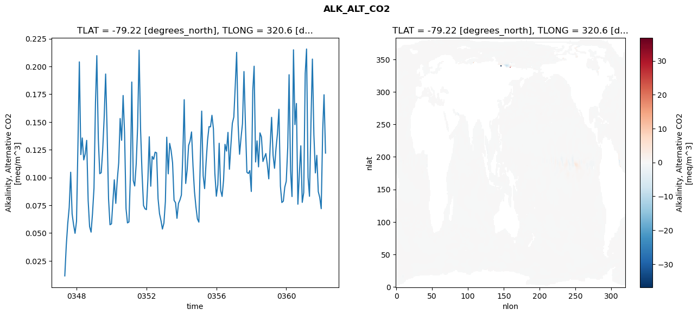
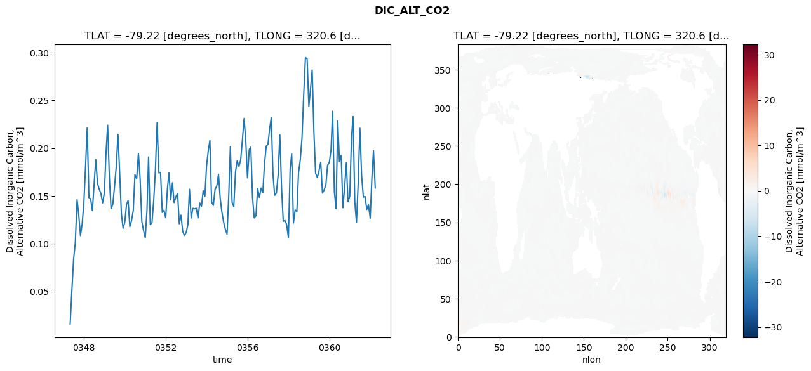
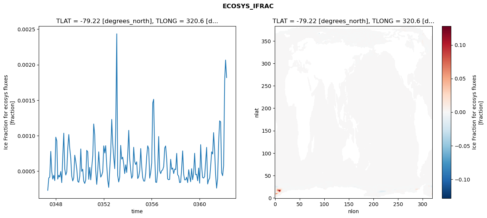
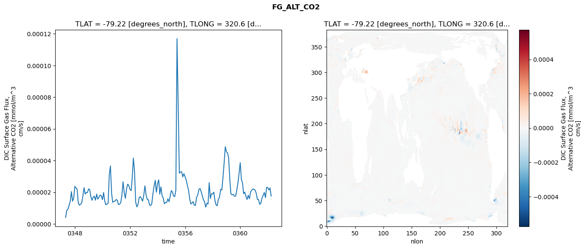

glb-dor_North_Atlantic_basin_042_1999-04-01_00169#
Simulation details#
Case: smyle.cdr-atlas-v0.glb-dor_North_Atlantic_basin_042_1999-04-01_00169.001
Basin: North_Atlantic_basin
Polygon: 42.0
Start date: 1999-04
Show code cell source Hide code cell source
import xarray as xr
import matplotlib.pyplot as plt
Show code cell source Hide code cell source
zarr_store = "/path/to/zarr/store"
# Parameters
zarr_store = "/global/cfs/projectdirs/m4746/Projects/Ocean-CDR-Atlas-v0/data/validation/smyle.cdr-atlas-v0.glb-dor_North_Atlantic_basin_042_1999-04-01_00169.001.validation.zarr"
Show code cell source Hide code cell source
%%time
ds_o = xr.open_zarr(zarr_store).compute()
ds_o
CPU times: user 600 ms, sys: 405 ms, total: 1.01 s
Wall time: 1.25 s
<xarray.Dataset> Size: 2MB
Dimensions: (nlat: 384, nlon: 320, time: 180)
Coordinates:
TLAT float64 8B -79.22
TLONG float64 8B 320.6
ULAT float64 8B -78.95
ULONG float64 8B 321.1
* time (time) object 1kB 0347-05-01 00:00:00 ... 0362-04-01 0...
z_t float32 4B 500.0
Dimensions without coordinates: nlat, nlon
Data variables:
ALK_ALT_CO2_diff (nlat, nlon) float32 492kB nan nan nan ... nan nan nan
ALK_ALT_CO2_rmse (time) float64 1kB 0.01139 0.03881 ... 0.1745 0.1219
DIC_ALT_CO2_diff (nlat, nlon) float32 492kB nan nan nan ... nan nan nan
DIC_ALT_CO2_rmse (time) float64 1kB 0.01607 0.05172 ... 0.1973 0.1583
ECOSYS_IFRAC_diff (nlat, nlon) float32 492kB nan nan nan ... nan nan nan
ECOSYS_IFRAC_rmse (time) float64 1kB 0.0002305 0.0004039 ... 0.001819
FG_ALT_CO2_diff (nlat, nlon) float32 492kB nan nan nan ... nan nan nan
FG_ALT_CO2_rmse (time) float64 1kB 4.09e-06 8.593e-06 ... 1.755e-05xarray.Dataset
- nlat: 384
- nlon: 320
- time: 180
- TLAT()float64-79.22
- long_name :
- array of t-grid latitudes
- units :
- degrees_north
array(-79.22052261)
- TLONG()float64320.6
- long_name :
- array of t-grid longitudes
- units :
- degrees_east
array(320.56250892)
- ULAT()float64-78.95
- long_name :
- array of u-grid latitudes
- units :
- degrees_north
array(-78.95289509)
- ULONG()float64321.1
- long_name :
- array of u-grid longitudes
- units :
- degrees_east
array(321.12500894)
- time(time)object0347-05-01 00:00:00 ... 0362-04-...
- bounds :
- time_bound
- long_name :
- time
array([cftime.DatetimeNoLeap(347, 5, 1, 0, 0, 0, 0, has_year_zero=True), cftime.DatetimeNoLeap(347, 6, 1, 0, 0, 0, 0, has_year_zero=True), cftime.DatetimeNoLeap(347, 7, 1, 0, 0, 0, 0, has_year_zero=True), cftime.DatetimeNoLeap(347, 8, 1, 0, 0, 0, 0, has_year_zero=True), cftime.DatetimeNoLeap(347, 9, 1, 0, 0, 0, 0, has_year_zero=True), cftime.DatetimeNoLeap(347, 10, 1, 0, 0, 0, 0, has_year_zero=True), cftime.DatetimeNoLeap(347, 11, 1, 0, 0, 0, 0, has_year_zero=True), cftime.DatetimeNoLeap(347, 12, 1, 0, 0, 0, 0, has_year_zero=True), cftime.DatetimeNoLeap(348, 1, 1, 0, 0, 0, 0, has_year_zero=True), cftime.DatetimeNoLeap(348, 2, 1, 0, 0, 0, 0, has_year_zero=True), cftime.DatetimeNoLeap(348, 3, 1, 0, 0, 0, 0, has_year_zero=True), cftime.DatetimeNoLeap(348, 4, 1, 0, 0, 0, 0, has_year_zero=True), cftime.DatetimeNoLeap(348, 5, 1, 0, 0, 0, 0, has_year_zero=True), cftime.DatetimeNoLeap(348, 6, 1, 0, 0, 0, 0, has_year_zero=True), cftime.DatetimeNoLeap(348, 7, 1, 0, 0, 0, 0, has_year_zero=True), cftime.DatetimeNoLeap(348, 8, 1, 0, 0, 0, 0, has_year_zero=True), cftime.DatetimeNoLeap(348, 9, 1, 0, 0, 0, 0, has_year_zero=True), cftime.DatetimeNoLeap(348, 10, 1, 0, 0, 0, 0, has_year_zero=True), cftime.DatetimeNoLeap(348, 11, 1, 0, 0, 0, 0, has_year_zero=True), cftime.DatetimeNoLeap(348, 12, 1, 0, 0, 0, 0, has_year_zero=True), cftime.DatetimeNoLeap(349, 1, 1, 0, 0, 0, 0, has_year_zero=True), cftime.DatetimeNoLeap(349, 2, 1, 0, 0, 0, 0, has_year_zero=True), cftime.DatetimeNoLeap(349, 3, 1, 0, 0, 0, 0, has_year_zero=True), cftime.DatetimeNoLeap(349, 4, 1, 0, 0, 0, 0, has_year_zero=True), cftime.DatetimeNoLeap(349, 5, 1, 0, 0, 0, 0, has_year_zero=True), cftime.DatetimeNoLeap(349, 6, 1, 0, 0, 0, 0, has_year_zero=True), cftime.DatetimeNoLeap(349, 7, 1, 0, 0, 0, 0, has_year_zero=True), cftime.DatetimeNoLeap(349, 8, 1, 0, 0, 0, 0, has_year_zero=True), cftime.DatetimeNoLeap(349, 9, 1, 0, 0, 0, 0, has_year_zero=True), cftime.DatetimeNoLeap(349, 10, 1, 0, 0, 0, 0, has_year_zero=True), cftime.DatetimeNoLeap(349, 11, 1, 0, 0, 0, 0, has_year_zero=True), cftime.DatetimeNoLeap(349, 12, 1, 0, 0, 0, 0, has_year_zero=True), cftime.DatetimeNoLeap(350, 1, 1, 0, 0, 0, 0, has_year_zero=True), cftime.DatetimeNoLeap(350, 2, 1, 0, 0, 0, 0, has_year_zero=True), cftime.DatetimeNoLeap(350, 3, 1, 0, 0, 0, 0, has_year_zero=True), cftime.DatetimeNoLeap(350, 4, 1, 0, 0, 0, 0, has_year_zero=True), cftime.DatetimeNoLeap(350, 5, 1, 0, 0, 0, 0, has_year_zero=True), cftime.DatetimeNoLeap(350, 6, 1, 0, 0, 0, 0, has_year_zero=True), cftime.DatetimeNoLeap(350, 7, 1, 0, 0, 0, 0, has_year_zero=True), cftime.DatetimeNoLeap(350, 8, 1, 0, 0, 0, 0, has_year_zero=True), cftime.DatetimeNoLeap(350, 9, 1, 0, 0, 0, 0, has_year_zero=True), cftime.DatetimeNoLeap(350, 10, 1, 0, 0, 0, 0, has_year_zero=True), cftime.DatetimeNoLeap(350, 11, 1, 0, 0, 0, 0, has_year_zero=True), cftime.DatetimeNoLeap(350, 12, 1, 0, 0, 0, 0, has_year_zero=True), cftime.DatetimeNoLeap(351, 1, 1, 0, 0, 0, 0, has_year_zero=True), cftime.DatetimeNoLeap(351, 2, 1, 0, 0, 0, 0, has_year_zero=True), cftime.DatetimeNoLeap(351, 3, 1, 0, 0, 0, 0, has_year_zero=True), cftime.DatetimeNoLeap(351, 4, 1, 0, 0, 0, 0, has_year_zero=True), cftime.DatetimeNoLeap(351, 5, 1, 0, 0, 0, 0, has_year_zero=True), cftime.DatetimeNoLeap(351, 6, 1, 0, 0, 0, 0, has_year_zero=True), cftime.DatetimeNoLeap(351, 7, 1, 0, 0, 0, 0, has_year_zero=True), cftime.DatetimeNoLeap(351, 8, 1, 0, 0, 0, 0, has_year_zero=True), cftime.DatetimeNoLeap(351, 9, 1, 0, 0, 0, 0, has_year_zero=True), cftime.DatetimeNoLeap(351, 10, 1, 0, 0, 0, 0, has_year_zero=True), cftime.DatetimeNoLeap(351, 11, 1, 0, 0, 0, 0, has_year_zero=True), cftime.DatetimeNoLeap(351, 12, 1, 0, 0, 0, 0, has_year_zero=True), cftime.DatetimeNoLeap(352, 1, 1, 0, 0, 0, 0, has_year_zero=True), cftime.DatetimeNoLeap(352, 2, 1, 0, 0, 0, 0, has_year_zero=True), cftime.DatetimeNoLeap(352, 3, 1, 0, 0, 0, 0, has_year_zero=True), cftime.DatetimeNoLeap(352, 4, 1, 0, 0, 0, 0, has_year_zero=True), cftime.DatetimeNoLeap(352, 5, 1, 0, 0, 0, 0, has_year_zero=True), cftime.DatetimeNoLeap(352, 6, 1, 0, 0, 0, 0, has_year_zero=True), cftime.DatetimeNoLeap(352, 7, 1, 0, 0, 0, 0, has_year_zero=True), cftime.DatetimeNoLeap(352, 8, 1, 0, 0, 0, 0, has_year_zero=True), cftime.DatetimeNoLeap(352, 9, 1, 0, 0, 0, 0, has_year_zero=True), cftime.DatetimeNoLeap(352, 10, 1, 0, 0, 0, 0, has_year_zero=True), cftime.DatetimeNoLeap(352, 11, 1, 0, 0, 0, 0, has_year_zero=True), cftime.DatetimeNoLeap(352, 12, 1, 0, 0, 0, 0, has_year_zero=True), cftime.DatetimeNoLeap(353, 1, 1, 0, 0, 0, 0, has_year_zero=True), cftime.DatetimeNoLeap(353, 2, 1, 0, 0, 0, 0, has_year_zero=True), cftime.DatetimeNoLeap(353, 3, 1, 0, 0, 0, 0, has_year_zero=True), cftime.DatetimeNoLeap(353, 4, 1, 0, 0, 0, 0, has_year_zero=True), cftime.DatetimeNoLeap(353, 5, 1, 0, 0, 0, 0, has_year_zero=True), cftime.DatetimeNoLeap(353, 6, 1, 0, 0, 0, 0, has_year_zero=True), cftime.DatetimeNoLeap(353, 7, 1, 0, 0, 0, 0, has_year_zero=True), cftime.DatetimeNoLeap(353, 8, 1, 0, 0, 0, 0, has_year_zero=True), cftime.DatetimeNoLeap(353, 9, 1, 0, 0, 0, 0, has_year_zero=True), cftime.DatetimeNoLeap(353, 10, 1, 0, 0, 0, 0, has_year_zero=True), cftime.DatetimeNoLeap(353, 11, 1, 0, 0, 0, 0, has_year_zero=True), cftime.DatetimeNoLeap(353, 12, 1, 0, 0, 0, 0, has_year_zero=True), cftime.DatetimeNoLeap(354, 1, 1, 0, 0, 0, 0, has_year_zero=True), cftime.DatetimeNoLeap(354, 2, 1, 0, 0, 0, 0, has_year_zero=True), cftime.DatetimeNoLeap(354, 3, 1, 0, 0, 0, 0, has_year_zero=True), cftime.DatetimeNoLeap(354, 4, 1, 0, 0, 0, 0, has_year_zero=True), cftime.DatetimeNoLeap(354, 5, 1, 0, 0, 0, 0, has_year_zero=True), cftime.DatetimeNoLeap(354, 6, 1, 0, 0, 0, 0, has_year_zero=True), cftime.DatetimeNoLeap(354, 7, 1, 0, 0, 0, 0, has_year_zero=True), cftime.DatetimeNoLeap(354, 8, 1, 0, 0, 0, 0, has_year_zero=True), cftime.DatetimeNoLeap(354, 9, 1, 0, 0, 0, 0, has_year_zero=True), cftime.DatetimeNoLeap(354, 10, 1, 0, 0, 0, 0, has_year_zero=True), cftime.DatetimeNoLeap(354, 11, 1, 0, 0, 0, 0, has_year_zero=True), cftime.DatetimeNoLeap(354, 12, 1, 0, 0, 0, 0, has_year_zero=True), cftime.DatetimeNoLeap(355, 1, 1, 0, 0, 0, 0, has_year_zero=True), cftime.DatetimeNoLeap(355, 2, 1, 0, 0, 0, 0, has_year_zero=True), cftime.DatetimeNoLeap(355, 3, 1, 0, 0, 0, 0, has_year_zero=True), cftime.DatetimeNoLeap(355, 4, 1, 0, 0, 0, 0, has_year_zero=True), cftime.DatetimeNoLeap(355, 5, 1, 0, 0, 0, 0, has_year_zero=True), cftime.DatetimeNoLeap(355, 6, 1, 0, 0, 0, 0, has_year_zero=True), cftime.DatetimeNoLeap(355, 7, 1, 0, 0, 0, 0, has_year_zero=True), cftime.DatetimeNoLeap(355, 8, 1, 0, 0, 0, 0, has_year_zero=True), cftime.DatetimeNoLeap(355, 9, 1, 0, 0, 0, 0, has_year_zero=True), cftime.DatetimeNoLeap(355, 10, 1, 0, 0, 0, 0, has_year_zero=True), cftime.DatetimeNoLeap(355, 11, 1, 0, 0, 0, 0, has_year_zero=True), cftime.DatetimeNoLeap(355, 12, 1, 0, 0, 0, 0, has_year_zero=True), cftime.DatetimeNoLeap(356, 1, 1, 0, 0, 0, 0, has_year_zero=True), cftime.DatetimeNoLeap(356, 2, 1, 0, 0, 0, 0, has_year_zero=True), cftime.DatetimeNoLeap(356, 3, 1, 0, 0, 0, 0, has_year_zero=True), cftime.DatetimeNoLeap(356, 4, 1, 0, 0, 0, 0, has_year_zero=True), cftime.DatetimeNoLeap(356, 5, 1, 0, 0, 0, 0, has_year_zero=True), cftime.DatetimeNoLeap(356, 6, 1, 0, 0, 0, 0, has_year_zero=True), cftime.DatetimeNoLeap(356, 7, 1, 0, 0, 0, 0, has_year_zero=True), cftime.DatetimeNoLeap(356, 8, 1, 0, 0, 0, 0, has_year_zero=True), cftime.DatetimeNoLeap(356, 9, 1, 0, 0, 0, 0, has_year_zero=True), cftime.DatetimeNoLeap(356, 10, 1, 0, 0, 0, 0, has_year_zero=True), cftime.DatetimeNoLeap(356, 11, 1, 0, 0, 0, 0, has_year_zero=True), cftime.DatetimeNoLeap(356, 12, 1, 0, 0, 0, 0, has_year_zero=True), cftime.DatetimeNoLeap(357, 1, 1, 0, 0, 0, 0, has_year_zero=True), cftime.DatetimeNoLeap(357, 2, 1, 0, 0, 0, 0, has_year_zero=True), cftime.DatetimeNoLeap(357, 3, 1, 0, 0, 0, 0, has_year_zero=True), cftime.DatetimeNoLeap(357, 4, 1, 0, 0, 0, 0, has_year_zero=True), cftime.DatetimeNoLeap(357, 5, 1, 0, 0, 0, 0, has_year_zero=True), cftime.DatetimeNoLeap(357, 6, 1, 0, 0, 0, 0, has_year_zero=True), cftime.DatetimeNoLeap(357, 7, 1, 0, 0, 0, 0, has_year_zero=True), cftime.DatetimeNoLeap(357, 8, 1, 0, 0, 0, 0, has_year_zero=True), cftime.DatetimeNoLeap(357, 9, 1, 0, 0, 0, 0, has_year_zero=True), cftime.DatetimeNoLeap(357, 10, 1, 0, 0, 0, 0, has_year_zero=True), cftime.DatetimeNoLeap(357, 11, 1, 0, 0, 0, 0, has_year_zero=True), cftime.DatetimeNoLeap(357, 12, 1, 0, 0, 0, 0, has_year_zero=True), cftime.DatetimeNoLeap(358, 1, 1, 0, 0, 0, 0, has_year_zero=True), cftime.DatetimeNoLeap(358, 2, 1, 0, 0, 0, 0, has_year_zero=True), cftime.DatetimeNoLeap(358, 3, 1, 0, 0, 0, 0, has_year_zero=True), cftime.DatetimeNoLeap(358, 4, 1, 0, 0, 0, 0, has_year_zero=True), cftime.DatetimeNoLeap(358, 5, 1, 0, 0, 0, 0, has_year_zero=True), cftime.DatetimeNoLeap(358, 6, 1, 0, 0, 0, 0, has_year_zero=True), cftime.DatetimeNoLeap(358, 7, 1, 0, 0, 0, 0, has_year_zero=True), cftime.DatetimeNoLeap(358, 8, 1, 0, 0, 0, 0, has_year_zero=True), cftime.DatetimeNoLeap(358, 9, 1, 0, 0, 0, 0, has_year_zero=True), cftime.DatetimeNoLeap(358, 10, 1, 0, 0, 0, 0, has_year_zero=True), cftime.DatetimeNoLeap(358, 11, 1, 0, 0, 0, 0, has_year_zero=True), cftime.DatetimeNoLeap(358, 12, 1, 0, 0, 0, 0, has_year_zero=True), cftime.DatetimeNoLeap(359, 1, 1, 0, 0, 0, 0, has_year_zero=True), cftime.DatetimeNoLeap(359, 2, 1, 0, 0, 0, 0, has_year_zero=True), cftime.DatetimeNoLeap(359, 3, 1, 0, 0, 0, 0, has_year_zero=True), cftime.DatetimeNoLeap(359, 4, 1, 0, 0, 0, 0, has_year_zero=True), cftime.DatetimeNoLeap(359, 5, 1, 0, 0, 0, 0, has_year_zero=True), cftime.DatetimeNoLeap(359, 6, 1, 0, 0, 0, 0, has_year_zero=True), cftime.DatetimeNoLeap(359, 7, 1, 0, 0, 0, 0, has_year_zero=True), cftime.DatetimeNoLeap(359, 8, 1, 0, 0, 0, 0, has_year_zero=True), cftime.DatetimeNoLeap(359, 9, 1, 0, 0, 0, 0, has_year_zero=True), cftime.DatetimeNoLeap(359, 10, 1, 0, 0, 0, 0, has_year_zero=True), cftime.DatetimeNoLeap(359, 11, 1, 0, 0, 0, 0, has_year_zero=True), cftime.DatetimeNoLeap(359, 12, 1, 0, 0, 0, 0, has_year_zero=True), cftime.DatetimeNoLeap(360, 1, 1, 0, 0, 0, 0, has_year_zero=True), cftime.DatetimeNoLeap(360, 2, 1, 0, 0, 0, 0, has_year_zero=True), cftime.DatetimeNoLeap(360, 3, 1, 0, 0, 0, 0, has_year_zero=True), cftime.DatetimeNoLeap(360, 4, 1, 0, 0, 0, 0, has_year_zero=True), cftime.DatetimeNoLeap(360, 5, 1, 0, 0, 0, 0, has_year_zero=True), cftime.DatetimeNoLeap(360, 6, 1, 0, 0, 0, 0, has_year_zero=True), cftime.DatetimeNoLeap(360, 7, 1, 0, 0, 0, 0, has_year_zero=True), cftime.DatetimeNoLeap(360, 8, 1, 0, 0, 0, 0, has_year_zero=True), cftime.DatetimeNoLeap(360, 9, 1, 0, 0, 0, 0, has_year_zero=True), cftime.DatetimeNoLeap(360, 10, 1, 0, 0, 0, 0, has_year_zero=True), cftime.DatetimeNoLeap(360, 11, 1, 0, 0, 0, 0, has_year_zero=True), cftime.DatetimeNoLeap(360, 12, 1, 0, 0, 0, 0, has_year_zero=True), cftime.DatetimeNoLeap(361, 1, 1, 0, 0, 0, 0, has_year_zero=True), cftime.DatetimeNoLeap(361, 2, 1, 0, 0, 0, 0, has_year_zero=True), cftime.DatetimeNoLeap(361, 3, 1, 0, 0, 0, 0, has_year_zero=True), cftime.DatetimeNoLeap(361, 4, 1, 0, 0, 0, 0, has_year_zero=True), cftime.DatetimeNoLeap(361, 5, 1, 0, 0, 0, 0, has_year_zero=True), cftime.DatetimeNoLeap(361, 6, 1, 0, 0, 0, 0, has_year_zero=True), cftime.DatetimeNoLeap(361, 7, 1, 0, 0, 0, 0, has_year_zero=True), cftime.DatetimeNoLeap(361, 8, 1, 0, 0, 0, 0, has_year_zero=True), cftime.DatetimeNoLeap(361, 9, 1, 0, 0, 0, 0, has_year_zero=True), cftime.DatetimeNoLeap(361, 10, 1, 0, 0, 0, 0, has_year_zero=True), cftime.DatetimeNoLeap(361, 11, 1, 0, 0, 0, 0, has_year_zero=True), cftime.DatetimeNoLeap(361, 12, 1, 0, 0, 0, 0, has_year_zero=True), cftime.DatetimeNoLeap(362, 1, 1, 0, 0, 0, 0, has_year_zero=True), cftime.DatetimeNoLeap(362, 2, 1, 0, 0, 0, 0, has_year_zero=True), cftime.DatetimeNoLeap(362, 3, 1, 0, 0, 0, 0, has_year_zero=True), cftime.DatetimeNoLeap(362, 4, 1, 0, 0, 0, 0, has_year_zero=True)], dtype=object) - z_t()float32500.0
- long_name :
- depth from surface to midpoint of layer
- positive :
- down
- units :
- centimeters
- valid_max :
- 537500.0
- valid_min :
- 500.0
array(500., dtype=float32)
- ALK_ALT_CO2_diff(nlat, nlon)float32nan nan nan nan ... nan nan nan nan
- cell_methods :
- time: mean
- grid_loc :
- 3111
- long_name :
- Alkalinity, Alternative CO2
- units :
- meq/m^3
array([[ nan, nan, nan, ..., nan, nan, nan], [ nan, nan, nan, ..., nan, nan, nan], [-0.05029297, -0.05249023, -0.06445312, ..., nan, nan, nan], ..., [ nan, nan, nan, ..., nan, nan, nan], [ nan, nan, nan, ..., nan, nan, nan], [ nan, nan, nan, ..., nan, nan, nan]], dtype=float32) - ALK_ALT_CO2_rmse(time)float640.01139 0.03881 ... 0.1745 0.1219
- cell_methods :
- time: mean
- grid_loc :
- 3111
- long_name :
- Alkalinity, Alternative CO2
- units :
- meq/m^3
array([0.01138642, 0.03880799, 0.05811241, 0.07289242, 0.10473659, 0.06719121, 0.0573018 , 0.04972131, 0.06054428, 0.13252226, 0.20409408, 0.1206041 , 0.13561028, 0.11582394, 0.12110884, 0.13343487, 0.0791859 , 0.05574073, 0.05077134, 0.06767433, 0.09049115, 0.16749634, 0.20970361, 0.13511227, 0.1034158 , 0.10430346, 0.12432052, 0.15351841, 0.19316408, 0.14295907, 0.08060703, 0.05744262, 0.05826579, 0.07898625, 0.09790686, 0.07667853, 0.09735749, 0.11320051, 0.15311383, 0.13346037, 0.17383394, 0.14039649, 0.07194411, 0.05909863, 0.05993813, 0.10312765, 0.185954 , 0.0972681 , 0.09234997, 0.11198782, 0.14560262, 0.21466422, 0.14287961, 0.10412548, 0.07483175, 0.07186916, 0.07105295, 0.09866597, 0.13665623, 0.09212979, 0.11899837, 0.11641039, 0.12280158, 0.1222187 , 0.08092379, 0.06737239, 0.06114481, 0.05356332, 0.05894272, 0.07847415, 0.1362793 , 0.10326778, 0.13070499, 0.1240074 , 0.11324204, 0.07944489, 0.07727291, 0.06322482, 0.07664138, 0.07962518, 0.08419099, 0.12224141, 0.17005888, 0.09459525, 0.10669818, 0.12885982, 0.13287404, 0.14100189, 0.11008186, 0.08744219, 0.07348522, 0.06275572, 0.05980227, 0.11768616, 0.15976483, 0.10163004, 0.08998992, 0.11380678, 0.13327614, 0.14579785, 0.14553727, 0.15598444, 0.14386028, 0.10377508, 0.08311372, 0.09338391, 0.13082639, 0.08840109, 0.08293996, 0.0975973 , 0.12983281, 0.12375739, 0.14060238, 0.1074192 , 0.12918106, 0.14873109, 0.154465 , 0.18356798, 0.21269183, 0.14755571, 0.12088682, 0.13603081, 0.1485005 , 0.19541471, 0.1468616 , 0.10473475, 0.10357212, 0.10623002, 0.08737985, 0.17821135, 0.20020348, 0.11397529, 0.13295123, 0.10956433, 0.14017267, 0.13644646, 0.11438024, 0.11801144, 0.12158304, 0.11162246, 0.09875715, 0.13040978, 0.1541533 , 0.11998746, 0.10827625, 0.12618913, 0.13949846, 0.16140959, 0.09225519, 0.07744702, 0.07866181, 0.09123301, 0.09658463, 0.12720179, 0.19254362, 0.10589922, 0.08281974, 0.21496772, 0.14761577, 0.16665832, 0.0759321 , 0.10309578, 0.12850282, 0.07758529, 0.08644397, 0.19367485, 0.21569405, 0.10008775, 0.08306834, 0.14926897, 0.20662135, 0.13850015, 0.10410771, 0.11995084, 0.08723451, 0.0820719 , 0.07190032, 0.14218812, 0.17449551, 0.1219484 ]) - DIC_ALT_CO2_diff(nlat, nlon)float32nan nan nan nan ... nan nan nan nan
- cell_methods :
- time: mean
- grid_loc :
- 3111
- long_name :
- Dissolved Inorganic Carbon, Alternative CO2
- units :
- mmol/m^3
array([[ nan, nan, nan, ..., nan, nan, nan], [ nan, nan, nan, ..., nan, nan, nan], [-0.08105469, -0.08569336, -0.10009766, ..., nan, nan, nan], ..., [ nan, nan, nan, ..., nan, nan, nan], [ nan, nan, nan, ..., nan, nan, nan], [ nan, nan, nan, ..., nan, nan, nan]], dtype=float32) - DIC_ALT_CO2_rmse(time)float640.01607 0.05172 ... 0.1973 0.1583
- cell_methods :
- time: mean
- grid_loc :
- 3111
- long_name :
- Dissolved Inorganic Carbon, Alternative CO2
- units :
- mmol/m^3
array([0.01607062, 0.05171572, 0.08372235, 0.10149206, 0.14590492, 0.13004532, 0.1084251 , 0.12061544, 0.14326032, 0.18260315, 0.22100596, 0.1481422 , 0.14697729, 0.13454535, 0.16142393, 0.18800377, 0.16300816, 0.15709184, 0.15242065, 0.14264496, 0.1532689 , 0.19648299, 0.22395615, 0.1684892 , 0.13659283, 0.14111128, 0.15941686, 0.18017839, 0.2143673 , 0.17478767, 0.13148271, 0.11613877, 0.12234625, 0.14111396, 0.14518551, 0.11775397, 0.12408161, 0.13467524, 0.17227704, 0.1679375 , 0.19448389, 0.1685672 , 0.12302501, 0.11393028, 0.10603808, 0.1350082 , 0.19070868, 0.12013183, 0.12182547, 0.14537956, 0.17678233, 0.22686939, 0.17401721, 0.17461185, 0.13273093, 0.13499369, 0.12708413, 0.15807578, 0.17387275, 0.14588459, 0.16362548, 0.14292218, 0.14894802, 0.15266803, 0.1208047 , 0.12983477, 0.1126423 , 0.10858492, 0.11143262, 0.1198894 , 0.15691336, 0.12686914, 0.13705601, 0.13643282, 0.13718109, 0.12685291, 0.14258284, 0.13884165, 0.15542562, 0.14943242, 0.18179351, 0.19772043, 0.2081518 , 0.14375016, 0.14000844, 0.15689789, 0.16010448, 0.17260907, 0.14727596, 0.1329827 , 0.12242217, 0.11510781, 0.10998264, 0.15157067, 0.20140377, 0.14333537, 0.13870235, 0.17527555, 0.18675984, 0.18071492, 0.18754541, 0.20768897, 0.23100441, 0.20760936, 0.16880752, 0.19853445, 0.20097324, 0.14843217, 0.12686284, 0.12929008, 0.15791722, 0.1484406 , 0.15825441, 0.15364632, 0.18374362, 0.20203052, 0.20392269, 0.2206179 , 0.23195969, 0.1725633 , 0.15065123, 0.1530763 , 0.17132195, 0.21379936, 0.15815308, 0.1233788 , 0.12427665, 0.11986545, 0.10632611, 0.17819309, 0.19409725, 0.12158697, 0.13532155, 0.13355795, 0.17423366, 0.18773231, 0.21114687, 0.25589723, 0.29474548, 0.29351561, 0.24372784, 0.26283347, 0.28169144, 0.21718297, 0.17372974, 0.16926682, 0.17624335, 0.18525372, 0.15285736, 0.15641412, 0.16159698, 0.18210623, 0.18490244, 0.19823261, 0.2386013 , 0.15476154, 0.13657374, 0.2285313 , 0.18553381, 0.19228087, 0.13757686, 0.15866445, 0.18456501, 0.143798 , 0.14964019, 0.21077561, 0.23295409, 0.14384637, 0.1221118 , 0.16388772, 0.2207835 , 0.17106332, 0.14870108, 0.14928898, 0.1358421 , 0.14085705, 0.12667838, 0.16974542, 0.19730061, 0.15825812]) - ECOSYS_IFRAC_diff(nlat, nlon)float32nan nan nan nan ... nan nan nan nan
- cell_methods :
- time: mean
- grid_loc :
- 2110
- long_name :
- Ice Fraction for ecosys fluxes
- units :
- fraction
array([[ nan, nan, nan, ..., nan, nan, nan], [ nan, nan, nan, ..., nan, nan, nan], [1.2755394e-04, 2.6881695e-05, 8.1211329e-04, ..., nan, nan, nan], ..., [ nan, nan, nan, ..., nan, nan, nan], [ nan, nan, nan, ..., nan, nan, nan], [ nan, nan, nan, ..., nan, nan, nan]], dtype=float32) - ECOSYS_IFRAC_rmse(time)float640.0002305 0.0004039 ... 0.001819
- cell_methods :
- time: mean
- grid_loc :
- 2110
- long_name :
- Ice Fraction for ecosys fluxes
- units :
- fraction
array([0.00023047, 0.00040392, 0.0004172 , 0.00077911, 0.00049126, 0.0003886 , 0.00044211, 0.00036774, 0.00097871, 0.00092621, 0.00038869, 0.00044239, 0.00041796, 0.000495 , 0.00033945, 0.00070263, 0.00103524, 0.00053135, 0.00044591, 0.00049114, 0.00082681, 0.00101616, 0.00082468, 0.00068623, 0.00043169, 0.00036263, 0.00040497, 0.00072518, 0.00063783, 0.00053347, 0.00035764, 0.00034325, 0.00042699, 0.00081354, 0.00049764, 0.00052767, 0.00036108, 0.00032754, 0.00037622, 0.00079351, 0.0007724 , 0.00038557, 0.00055342, 0.00037792, 0.00055678, 0.0007167 , 0.00116506, 0.00101379, 0.00050601, 0.00031434, 0.00050167, 0.00077316, 0.00054157, 0.00041627, 0.00044511, 0.00049136, 0.00085696, 0.00075646, 0.0008591 , 0.00058863, 0.00037555, 0.00027184, 0.00051848, 0.00077039, 0.00122941, 0.00089499, 0.00069292, 0.00053579, 0.00109991, 0.0024351 , 0.00044169, 0.00034808, 0.00041392, 0.00086387, 0.00067032, 0.00069736, 0.00060068, 0.00046633, 0.0005896 , 0.00048229, 0.00073598, 0.00107541, 0.0006849 , 0.00051338, 0.00039975, 0.00043544, 0.00083663, 0.00063544, 0.00059368, 0.00063239, 0.00039625, 0.00042354, 0.00050692, 0.00081874, 0.00057463, 0.00041107, 0.00036204, 0.00036032, 0.00046682, 0.00070385, 0.00085757, 0.00081512, 0.00040225, 0.00047935, 0.00061802, 0.00146124, 0.00151255, 0.00074008, 0.00034554, 0.00034238, 0.00050229, 0.00098829, 0.00050781, 0.00046616, 0.0005079 , 0.00051893, 0.00056631, 0.00082836, 0.00085552, 0.0006744 , 0.00039082, 0.00037983, 0.00038539, 0.00066723, 0.00052754, 0.00054558, 0.00046625, 0.00052961, 0.0005236 , 0.00075105, 0.00045145, 0.00042919, 0.0003394 , 0.00034472, 0.00053553, 0.00078611, 0.00045742, 0.00037734, 0.00037923, 0.00041515, 0.00033942, 0.00052059, 0.00042886, 0.00035178, 0.00053536, 0.00038023, 0.0004717 , 0.00075243, 0.00045093, 0.00045613, 0.00036566, 0.00054468, 0.00033135, 0.0008739 , 0.00056787, 0.00041133, 0.00040358, 0.00042465, 0.00062512, 0.00083555, 0.0003197 , 0.00037514, 0.00040264, 0.00056754, 0.00077266, 0.00074204, 0.00104341, 0.00079222, 0.00045007, 0.00026167, 0.00039592, 0.00089837, 0.0012088 , 0.00119578, 0.00047645, 0.0004364 , 0.00058047, 0.00177363, 0.00206553, 0.00181869]) - FG_ALT_CO2_diff(nlat, nlon)float32nan nan nan nan ... nan nan nan nan
- cell_methods :
- time: mean
- grid_loc :
- 2110
- long_name :
- DIC Surface Gas Flux, Alternative CO2
- units :
- mmol/m^3 cm/s
array([[ nan, nan, nan, ..., nan, nan, nan], [ nan, nan, nan, ..., nan, nan, nan], [-1.9694562e-07, -6.7712972e-07, -4.8310903e-06, ..., nan, nan, nan], ..., [ nan, nan, nan, ..., nan, nan, nan], [ nan, nan, nan, ..., nan, nan, nan], [ nan, nan, nan, ..., nan, nan, nan]], dtype=float32) - FG_ALT_CO2_rmse(time)float644.09e-06 8.593e-06 ... 1.755e-05
- cell_methods :
- time: mean
- grid_loc :
- 2110
- long_name :
- DIC Surface Gas Flux, Alternative CO2
- units :
- mmol/m^3 cm/s
array([4.08955778e-06, 8.59315223e-06, 9.28213640e-06, 1.17745160e-05, 1.41969321e-05, 2.03653798e-05, 1.43297504e-05, 1.62775083e-05, 2.36579285e-05, 2.26117380e-05, 2.19323528e-05, 1.33474257e-05, 1.17975775e-05, 1.23703802e-05, 1.31331546e-05, 1.75103817e-05, 2.28520330e-05, 1.88122341e-05, 1.98478608e-05, 1.97966772e-05, 2.20836764e-05, 2.14954638e-05, 1.71341309e-05, 1.48666017e-05, 1.68283784e-05, 1.74491199e-05, 1.49299067e-05, 1.87906207e-05, 1.55758508e-05, 1.68010045e-05, 1.81778220e-05, 1.78196923e-05, 1.52876691e-05, 1.97876845e-05, 1.46636098e-05, 1.20845224e-05, 1.24330151e-05, 1.31098582e-05, 3.09048767e-05, 3.65734025e-05, 1.92437483e-05, 1.35798452e-05, 1.42426710e-05, 1.43808800e-05, 1.53574120e-05, 1.48707385e-05, 1.21669279e-05, 1.24625076e-05, 1.33327602e-05, 1.81220284e-05, 2.65700545e-05, 1.97771545e-05, 1.60972210e-05, 2.19887995e-05, 2.50478398e-05, 2.41933314e-05, 2.16933330e-05, 2.09982884e-05, 2.90750699e-05, 4.15157905e-05, 3.32277131e-05, 1.37231890e-05, 1.07370204e-05, 1.22389341e-05, 1.66839335e-05, 1.71515672e-05, 1.59588664e-05, 1.43138158e-05, 1.80691749e-05, 2.40041376e-05, 1.86030197e-05, 1.55409621e-05, 1.53172682e-05, 1.20271731e-05, 1.15570166e-05, 1.26455960e-05, 1.90124701e-05, 2.38909523e-05, 2.74713113e-05, 1.99639441e-05, ... 3.27714290e-05, 3.29527157e-05, 2.96600414e-05, 3.16923685e-05, 2.97032459e-05, 2.74881343e-05, 2.43960836e-05, 2.13613040e-05, 1.61080051e-05, 1.25572333e-05, 1.31263981e-05, 1.40511977e-05, 1.17503932e-05, 1.16580015e-05, 1.67900327e-05, 1.80306156e-05, 2.17072581e-05, 2.23480938e-05, 2.04375200e-05, 1.77916220e-05, 1.52464783e-05, 1.38567071e-05, 1.05555980e-05, 1.30637330e-05, 1.25638885e-05, 2.60238616e-05, 1.60619025e-05, 1.89879646e-05, 1.88515587e-05, 2.00041381e-05, 1.48742159e-05, 1.19593375e-05, 1.14514191e-05, 1.54760587e-05, 1.68844429e-05, 2.18373275e-05, 2.14034426e-05, 2.93533346e-05, 3.85216235e-05, 4.87233854e-05, 4.54875078e-05, 4.47286421e-05, 4.15854193e-05, 2.74294103e-05, 1.88209462e-05, 1.83471980e-05, 1.86483102e-05, 1.74396462e-05, 1.75390067e-05, 2.11740957e-05, 2.58588768e-05, 3.17151586e-05, 3.86341587e-05, 2.78388289e-05, 2.62052468e-05, 1.90197766e-05, 2.01033328e-05, 1.73256979e-05, 1.53720381e-05, 1.80703687e-05, 1.58521370e-05, 2.00366224e-05, 2.13003592e-05, 2.19819270e-05, 2.18122812e-05, 2.12252075e-05, 1.92746641e-05, 1.53849410e-05, 1.53429283e-05, 1.23212274e-05, 1.29925372e-05, 1.63510291e-05, 1.79748208e-05, 1.98245404e-05, 1.65898168e-05, 2.31290689e-05, 2.28454305e-05, 2.14048322e-05, 2.26933440e-05, 1.75535484e-05])
- timePandasIndex
PandasIndex(CFTimeIndex([0347-05-01 00:00:00, 0347-06-01 00:00:00, 0347-07-01 00:00:00, 0347-08-01 00:00:00, 0347-09-01 00:00:00, 0347-10-01 00:00:00, 0347-11-01 00:00:00, 0347-12-01 00:00:00, 0348-01-01 00:00:00, 0348-02-01 00:00:00, ... 0361-07-01 00:00:00, 0361-08-01 00:00:00, 0361-09-01 00:00:00, 0361-10-01 00:00:00, 0361-11-01 00:00:00, 0361-12-01 00:00:00, 0362-01-01 00:00:00, 0362-02-01 00:00:00, 0362-03-01 00:00:00, 0362-04-01 00:00:00], dtype='object', length=180, calendar='noleap', freq='MS'))
Show code cell source Hide code cell source
variables = [v[:-5] for v in ds_o.variables if "_rmse" in v]
Show code cell source Hide code cell source
plt.rcParams.update({'figure.max_open_warning': 0})
for v in variables:
fig, axs = plt.subplots(1, 2, figsize=(15, 6))
ds_o[f"{v}_rmse"].plot(ax=axs[0])
ds_o[f"{v}_diff"].plot(ax=axs[1])
plt.suptitle(v, fontweight="bold")



